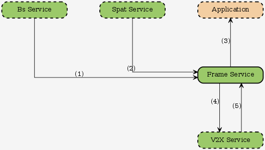

MessageFrame are distibuted within the WAVE network and is a container for sending and receiving many types of messages.
MessageFrame is composed of two elements :
- the value field which include the message to send (BSM, SPAT or MapData)
- the messageId correspondind to the message embeded in the MessageFrame.
For the moment, only BSM, SPAT and MapData can be sent using MessageFrame.
Currently supported standard version:
Processing and I/O
On emission, Frame service receives BSM, SPAT and MapData messages from other services. It creates MessageFrame messages from them and set the correspondind messageId. Then, they are sent to the netwotk.
On reception, Frame messages are decoded and decomposed then BSM, SPAT and MapData are passed to the upper layer.

- (1) pubsub outbsm
- (2) pubsub outspat/outmap
- (3) pubsub in/own (bsm/spat/map)
- (4) socket sender
- (5) socket receiver
Note: The FrameService supports the following formats for emission and reception: ASN1_UPER, JSON, XML, Human Readable
Generation of Frame messages
Frame content are generated based on received messages. Only message Id is added by the FrameService.
| message type | message id |
| BSM | 20 |
| SPAT | 19 |
| MAP | 18 |
Emission of Frame messages
After the generation of a Frame Message, the service will determine if the message must be sent to the v2x network.
Timing :
- Frame message embeded a BSM : emission timing will be dependent to the configuration of the facility (bsmgeninterval).
- Frame message embeded a SPAT or a MapData : a message will be sent each time a SPAT or MapData is received.
Reception of Frame messages
Frame messages are received from an itssocket. Two process occurs during reception :
- ASN.1 decoding which could failed if the received message is not encoded with the current version implemented.
- Extraction of the message value (BSM, SPAT or MapData) of the Frame message.
Extracted data are then publish on the corresponding *inxxx" message id.
Configuration and MIBs
List of MIB entries
Details of MIB entries:
| Section | Field | Description | Default value |
| pubsub | bsmapplicationid | application id for the BSM sub-service | 150 |
| pubsub | spatapplicationid | application id for the SPAT sub-service | 151 |
| pubsub | mapapplicationid | application id for the MapData sub-service | 152 |
| pubsub | inbsm | Message id on which BSM from the V2X network will be sent if decoded has succeed | 121 |
| pubsub | outbsm | Message id on which generated BSM are sent from BSService to FrameService | 131 |
| pubsub | ownbsm | Message id on which BSM integrated in a Frame message are published | 141 |
| pubsub | inspat | Message id on which SPAT messages from the V2X network will be sent if decoded has succeed | 24 |
| pubsub | outspat | Message id on which generated SPAT are sent from SpatService to FrameService | 34 |
| pubsub | ownspat | Message id on which SPAT integrated in a Frame message are published | 44 |
| pubsub | inmap | Message id on which MapData from the V2X network will be sent if decoded has succeed | 23 |
| pubsub | outmap | Message id on which generated BSM are sent from SpatService to FrameService | 33 |
| pubsub | ownmap | Message id on which MapData integrated in a Frame message are published | 43 |
| pubsub | ownframe | Message id on which Frame messages sent to the v2x network are published | 152 |
| cache | vdpcacheid | Object id for the VDP cache | 0 |
| socket | frame | itssocket use to send and receive from the V2X network layer | wsmp://cch: |
| standard | reference | standard reference to use | SAE_J2735 |
| standard | version | standard reference version to use | 2016 |
| recvcontrol | dropownmsgs | Whether the FrameService should drop its own messages on reception | false |
| sendcontrol | bsmgenerationcontrol | Emission interval of Frame messages enbeding BSM messages | 2000 |
| sendcontrol | bsmgeninterval | Whether the FrameService should control generation frequency of BSM messages | true |
Sample configuration file
config/40-frameservice.xml
<?xml version="1.0" encoding="utf-8"?>
<configuration>
<service start="false" instance="0">FrameService</service>
<config>
<pubsub ownframe="152"
bsmapplicationid="150" outbsm="131" inbsm="121" ownbsm="141"
spatapplicationid="151" outspat="34" inspat="24" ownspat="44"
mapapplicationid="152" outmap="33" inmap="23" ownmap="43" />
<cache vdpcacheid="0"/>
<socket frame="wsmp://cch:" />
<standard reference="SAE_J2735" version="2016"/>
<recvcontrol dropownmsgs="false"/>
<sendcontrol bsmgenerationcontrol="true"
bsmgeninterval="2000" />
</config>
</configuration>
Usage examples
Retrieve sent Frame messages (JSON format)
$ mwpubsub -s -m 152 -a 1025 -j 7
Output:
{"id":18,"value":{"msgIssueRevision":95,"intersections":[{"laneSet":[{"connectsTo":[{"signalGroup":89,"connectingLane":{"lane":2}},{"signalGroup":89,"connectingLane":{"lane":3}},{"signalGroup":89,"connectingLane":{"lane":4}}],"laneID":1,"laneAttributes":{"directionalUse":"80","laneType":{"vehicle":"00"},"sharedWith":"0000"},"nodeList":{"nodes":[{"delta":{"node-XY6":{"x":-9000,"y":-8000}}},{"delta":{"node-XY6":{"x":-12000,"y":-10000}}}]}},{"laneID":2,"laneAttributes":{"directionalUse":"40","laneType":{"vehicle":"00"},"sharedWith":"0000"},"nodeList":{"nodes":[{"delta":{"node-XY4":{"x":2000,"y":3000}}},{"delta":{"node-XY5":{"x":4000,"y":5000}}}]}},{"connectsTo":[{"signalGroup":89,"connectingLane":{"lane":1}},{"signalGroup":89,"connectingLane":{"lane":2}},{"signalGroup":89,"connectingLane":{"lane":4}}],"laneID":3,"laneAttributes":{"directionalUse":"80","laneType":{"vehicle":"00"},"sharedWith":"0000"},"nodeList":{"nodes":[{"delta":{"node-XY6":{"x":-9000,"y":7000}}},{"delta":{"node-XY6":{"x":-12000,"y":10000}}}]}},{"laneID":4,"laneAttributes":{"directionalUse":"40","laneType":{"vehicle":"00"},"sharedWith":"0000"},"nodeList":{"nodes":[{"delta":{"node-XY5":{"x":4000,"y":-6000}}},{"delta":{"node-XY5":{"x":6000,"y":-8000}}}]}}],"refPoint":{"lat":481350568,"long":-16221928},"id":{"id":1,"region":1},"revision":1}]}}
{"id":19,"value":{"intersections":[{"timeStamp":8981,"moy":67113,"id":{"id":1,"region":1},"revision":1,"status":"0000","states":[{"state-time-speed":[{"eventState":"protected-Movement-Allowed","timing":{"minEndTime":20080}},{"eventState":"permissive-clearance","timing":{"minEndTime":20100,"startTime":20080}},{"eventState":"stop-And-Remain","timing":{"minEndTime":20420,"startTime":20100}},{"eventState":"protected-Movement-Allowed","timing":{"minEndTime":20680,"startTime":20420}},{"eventState":"permissive-clearance","timing":{"minEndTime":20700,"startTime":20680}}],"signalGroup":89},{"state-time-speed":[{"eventState":"stop-And-Remain","timing":{"minEndTime":20100}},{"eventState":"protected-Movement-Allowed","timing":{"minEndTime":20360,"startTime":20100}},{"eventState":"permissive-clearance","timing":{"minEndTime":20380,"startTime":20360}},{"eventState":"stop-And-Remain","timing":{"minEndTime":20700,"startTime":20380}}],"signalGroup":111}]}]}}
{"id":20,"value":{"coreData":{"secMark":14137,"heading":15136,"brakes":{"scs":"unavailable","wheelBrakes":"80","abs":"unavailable","traction":"unavailable","brakeBoost":"unavailable","auxBrakes":"unavailable"},"accuracy":{"semiMinor":0,"orientation":0,"semiMajor":0},"msgCnt":49,"long":-15190592,"speed":70,"transmission":"unavailable","size":{"width":0,"length":0},"accelSet":{"vert":-127,"long":2001,"lat":2001,"yaw":0},"elev":1820,"angle":127,"id":"00002709","lat":481289784}}}
 1.8.13
1.8.13